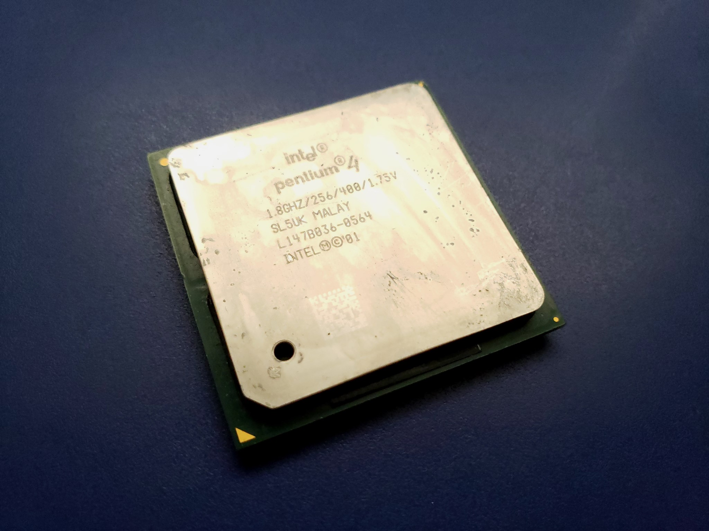
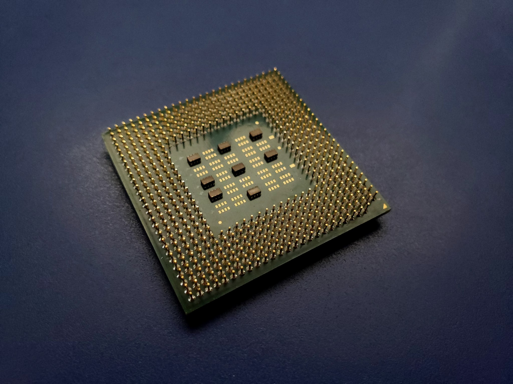

Techie's Tech Museum
Techie's Tech Museum
|  |  |
Pentium 4
Microarchitecture: NetBurst/P68
Marketed as a successor to the previous Pentium III and marking a shift away from Roman numerals, the Pentium 4 used a redesigned architecture centered around a long instruction pipeline. While this 20-stage (double that of the Pentium 3) pipeline allowed for much higher clock speeds, the IPC (Instructions Per Clock) suffered as a consequence due to a heavier penalty for each mis-prediction made by the branch predictor, which is meant to dynamically predict future branches in the code being executed ahead of time to increase execution efficiency.
Variant: Willamette
The first take on the NetBurst microarchitecture. These processors used Socket 423 and later Socket 478, both of which were PGA sockets. The chipsets that were used with these CPUs at the time required RDRAM, which was somewhat faster, but at the same time much more expensive than traditional SDRAM. However, in August of 2001, Intel would remedy this with their 845 chipset, which allowed the use of SDRAM. SSE2 was also first implemented in this core.
Variant: Northwood
The Northwood core both shrunk the process node and increased the amount of L2 cache available, which led to a mild performance enhancement. These Pentium 4 CPUs would also mark the first availability of Intel's Hyper-Threading technology, which would effectively split single processor cores into multiple processor threads. The implementation Intel uses for this technology allows two sets of instructions to thus be executed at once on a single physical core to better use resources that may otherwise be sitting idle. The "Pentium 4 Extreme Edition" processors released in September of 2003 adds 2MB of level 3 cache, but otherwise is more or less the same as Intel's Gallatin core (of which is itself a modified Northwood core).
Variant: Pentium 4-M
Based on the Northwood core. This chip did not have an IHS (Integrated Heat Spreader) and operated at a lower voltage.
Variant: Mobile Pentium 4
A sort of in-between chip filling the space between a Pentium 4-M and the desktop-class Pentium 4s.
Variant: Prescott
A die shrink to the 90nm process node. This core adds additional cache and the new SSE3 instruction set extensions, and later models introduce the Execute Disable (XD)-bit security feature and 64-bit computing, which is licensed from Intel's chief rival, AMD. A later revision called Prescott 2M combines the higher cache, features, and node size as previous Prescott cores, along with some models introducing VT (Virtualization Technology).
Variant: Cedar Mill
The last Petnium 4 revision. This further shrunk the die of the Prescott 2M core to 65nm, but otherwise did not introduce any new features save for lower power consumption and heat output. A planned successor codenamed "Tejas" that would've likely become the Pentium 5 was scrapped roughly a year prior to Cedar Mill due to an extremely high TDP, and further development on the NetBurst architecture and any true successors ceased entirely.